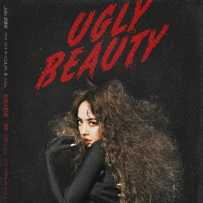

About the Artist
Jolin Tsai, 蔡依林 (Cai Yi Lin), was born on September 15, 1980 in Taiwan in Xin Zhuang, Taipei. In 1998, she joined a MTV singing competition and won. She then signed a recording deal with Universal Music Taiwan and released her debut single Living With The World in July of 1999. In September of the same year, she released her debut album 1019, which sold over 400,000 copies in Taiwan alone. She is referred to as the Queen of C-Pop and known for frequently reinventing both her music and image.